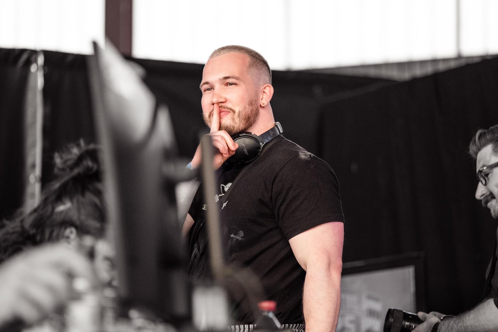
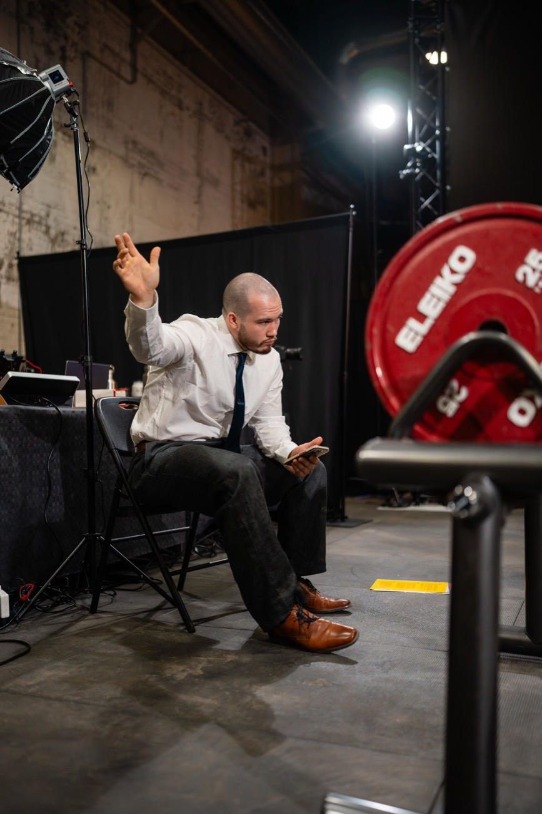

Stärker werden.
Auf lange Sicht.
Wissenschaftlich fundiertes Online-Coaching für Powerlifter:innen. Für Wettkampfathlet:innen und für alle, die langfristig stärker werden wollen.

Mit oder ohne Wettkampf
Dein Ziel bestimmt den Plan.
Wettkampfathlet:innen
Du willst zur Landes- oder Deutschen Meisterschaft, ein neues Total knacken oder deine erste Quali holen. Ich begleite dich mit periodisierter Vorbereitung, Peaking auf deinen Termin und Betreuung am Wettkampftag.
Einsteiger:innen & Kraftsportler:innen
Du willst Kniebeuge, Bankdrücken und Kreuzheben sauber lernen und stärker werden, ohne auf einen Wettkampf hinzuarbeiten. Wir bauen die Technik von Grund auf auf und steigern die Belastung so, dass du gesund bleibst.
Wissenschaftlich fundiert, aber nie starr
Fundiert
Ich richte Volumen, Intensität und Belastungssteuerung an aktueller Evidenz aus und erkläre dir, warum ich etwas so plane.
Flexibel
Job, Stress, Schlaf oder ein Zwicken: Ich passe deinen Plan jede Woche an dein Feedback an.
Langfristig
Ich denke in Saisons und Jahren. Ziel ist stetiger Fortschritt bei guter Gesundheit und eine Zusammenarbeit, die über einzelne Wettkämpfe hinausgeht.
Was du bekommst
Anamnese & Zielbesprechung
Wir klären deine Ausgangslage, deine Verletzungshistorie und deine Ziele. Das ist die Basis für deinen Plan.
Wöchentliche Trainingsplanung
Dein Plan wird jede Woche an dein Feedback und deinen Alltag angepasst. Du bekommst ihn in Google Sheets.
Engmaschiger Kontakt
Du erreichst mich direkt per WhatsApp, bei Fragen zu Training und Vorbereitung.
Videofeedback
Du schickst mir Videos, ich analysiere sie wöchentlich und gebe dir konkrete Cues zur Verbesserung.
Ernährungsberatung
Grundlegende Ernährungsberatung, passend zu Training und Gewichtsklasse.
Sportpsychologische Betreuung
Umgang mit Druck, Rückschlägen und Wettkampfnervosität.
So startest du
Vom ersten Gespräch bis zum ersten Trainingsblock.
Termin buchen
Du wählst einen Termin für ein kostenloses Erstgespräch und beantwortest ein paar Fragen zu dir.
Erstgespräch buchenKennenlernen
Im Gespräch klären wir deine Ausgangslage, deine Ziele und ob wir zusammenpassen.
Planung
Du bekommst deinen individuellen Plan für den ersten Block.
Training & Feedback
Du trainierst und schickst Videos, ich analysiere und wir justieren nach.

Hi, ich bin Leon
Sport begleitet mich seit meiner Kindheit. Um mich in den Teenagerjahren im Basketball auf das nächste Level zu bringen, habe ich den Kraftsport für mich entdeckt. Zunächst standen Athletik und performance-orientiertes Training im Vordergrund, nach ein paar Jahren bin ich beim Kraftdreikampf gelandet.
Im Studium der Sportwissenschaften, durch Fortbildungen und die Arbeit in verschiedenen Fitnessstudios und Sportvereinen habe ich theoretische Grundlagen und Praxiserfahrung gesammelt, die ich heute im Coaching weitergebe.
Ich stehe selbst regelmäßig auf der Plattform und kenne das Regelwerk auch als Kampfrichter. Am Coaching macht mir am meisten Spaß, Menschen auf ihrer Reise zu begleiten und wachsen zu sehen, im Sport und außerhalb. Besonders gern arbeite ich mit Nachwuchsathlet:innen. Meine Wettkampferfahrung und das, was ich im Studium gelernt habe, gebe ich dabei gern weiter.
Ich coache auf Augenhöhe, als Miteinander und nicht nach dem Motto „Ich sage dir, wo es langgeht“. Mir ist wichtig, dass du dich selbstwirksam erlebst. Deshalb fördere ich deine Autonomie und deine Kompetenz, damit du verstehst, was du tust und warum.
Ich wohne in Köln und trainiere im Vereinsgym von Kraftsport Colonia, meist zusammen mit guten Freunden. Das Coaching läuft online, aber wenn es sich ergibt, bin ich auch für gemeinsame Trainingseinheiten vor Ort offen. Wenn ich nicht gerade unter der Stange stehe, findest du mich mit einem guten Kaffee in der Hand, bei einer Pizza oder bei irgendeiner Sportart, für die ich mich gerade begeistere.
- B.A. Sportwissenschaften Schwerpunkt Psychologie und Bewegung
- M.A. Prävention, Rehabilitation & Gesundheitsmanagement Deutsche Sporthochschule Köln · in Arbeit
- Athletiktrainer-Lizenz
- Ernährungsberater-Lizenz
- Fitnesstrainer-A-Lizenz
- Kampfrichter-Landeslizenz Bundesverband Deutscher Kraftdreikämpfer (BVDK)
Aktiv auf der Plattform
Raw, BVDK, −93 kg. Alle Ergebnisse auf OpenPowerlifting.
| Datum | Wettkampf | KB | BD | KH | Total | DOTS |
|---|---|---|---|---|---|---|
| 03.10.2025 | LM NRW KDK Aktive | 252,5 | 177,5 | 270 | 700 | 446,42 |
| 07.06.2025 | Stadtmeisterschaft Gütersloh | 242,5 | 167,5 | 260 | 670 | 426,51 |
| 23.11.2024 | LM NRW KDK Aktive | 237,5 | 162,5 | 247,5 | 647,5 | 412,40 |
| 17.11.2023 | DM Classic Jugend/Junioren | 225 | 157,5 | 237,5 | 620 | 395,09 |
| 21.10.2023 | LM NRW Jugend/Junioren | 220 | 155 | 232,5 | 607,5 | 387,02 |
Das sagen meine Athlet:innen
Testimonials translated from German.
„Was Leon als Coach für mich besonders macht, ist die Kombination aus fachlicher Expertise, individueller Betreuung und einem echten Verständnis für die Person hinter dem/der Athlet:in.“
„Meine Kniebeuge konnte ich von 145 kg beim ersten Wettkampf auf 185 kg bei der letzten Deutschen Meisterschaft steigern; meine Bank von 77,5 kg auf 100 kg […]. Leon hat genau das richtige Gespür dafür, wann man einen zusätzlichen Push braucht und wann es sinnvoll ist, einen Gang zurückzuschalten.“
Sophia FuhlbrückPowerlifterin · sechs gemeinsame Wettkämpfe
„Leons individuell angepasstes Trainingsprogramm und seine offene Kommunikation haben mir geholfen, massive Fortschritte in kurzer Zeit zu machen, ohne dabei meine körperliche Gesundheit zu beeinträchtigen.“
„Ich habe vor allem gelernt, dass Powerlifting nicht nur heißt, jede Woche mehr Gewicht zu bewegen, sondern dass Fortschritt ein Prozess ist, der aus Nachhaltigkeit und langfristiger Perspektive entsteht.“
LucasPowerlifter, 83 kg
„Besonders beeindruckt hat mich seine professionelle und wissenschaftlich fundierte Herangehensweise, die er konsequent in das Training eingebracht hat.“
„Während der Wettkampfvorbereitung war Leon äußerst zuverlässig, immer erreichbar und flexibel. Selbst spontane Anpassungen waren für ihn kein Problem.“
Miriam WindgasseBVDK Powerlifterin −84 kg
„Ich konnte dann also nach 12 Wochen Vorbereitung auf der Landesmeisterschaft NRW […] meine Werte von vor der Vorbereitung um 50 kg steigern.“
„Auch die nächsten drei Wettkämpfe habe ich mit Leon zusammen gemacht, und wir konnten gemeinsam mein Total um weitere 75 kg […] steigern.“
Leif NackeBVDK Powerlifter Jr. −83 kg
Auf der Plattform und daneben
Wettkampftage, Podien und Backstage-Momente mit meinen Athlet:innen.


Zwei Tarife
Keine Mindestvertragslaufzeit. Du bleibst, solange es dir etwas bringt.
Standard
Für Wettkampfathlet:innen, Einsteiger:innen und Kraftsportler:innen.
Sub-Junior:innen & Junior:innen
Ermäßigter Preis für Athlet:innen in den Sub-Junior- und Junior-Klassen.
Gleiche Leistungen in beiden Tarifen. Kein Umsatzsteuerausweis gemäß § 19 UStG.
Häufige Fragen
Muss ich Wettkämpfe machen?
Nein. Ich betreue Wettkampfathlet:innen genauso wie Einsteiger:innen ohne Wettkampfambitionen. Dein Ziel bestimmt die Planung.
Wie läuft das Coaching ab?
Alles online: Dein Training läuft über Google Sheets, wir schreiben per WhatsApp, und du schickst mir regelmäßig Videos für die Technikanalyse.
Ich habe noch nie Powerlifting gemacht – ist das okay?
Kein Problem. Wir bauen die Technik in Kniebeuge, Bankdrücken und Kreuzheben gemeinsam auf und steigern die Belastung Schritt für Schritt.
Wie schnell bekomme ich Feedback zu meinen Videos?
Ich analysiere deine Videos wöchentlich und gebe dir konkrete Technik-Cues.
Gibt es eine Mindestvertragslaufzeit?
Nein, es gibt keine Mindestvertragslaufzeit. Ich möchte, dass du bleibst, weil es dir etwas bringt.
Lass uns loslegen
Such dir einen Termin aus und erzähl mir, wo du stehst und wo du hinwillst.
Kostenloses Erstgespräch buchenOder schreib mir auf Instagram @thereal_gymshady